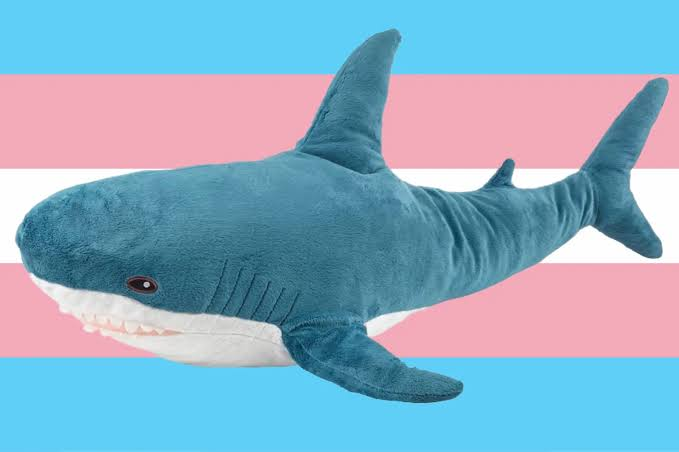

Hewwwoi :3
Hey so this is a really really basic website i made just because i can and that makes it so my base
domain
dosent
redirect anymore.
This website was made in a couple of hours and is hosted on github pages for the time being.
The theme is currently rosé pine and you have absolutely no choice in changing it.
About me
Haiiiii!

Who am i? I'm lttd/Acobe, a Protogen furry femboy catboy thing existing on the internet :3c.
Name: Refer to me as Acobe or lttd
Gender: Demiboy
Age:
Sexuality: Pansexual
CachyOS Linux Hyprland HyDE user, but stuck on windows due to school.
What do i like?
I like
PC Stuff
Tech (i can and will be willing to help if anyone needs tech support lol)
Tiny bit of coding(like this website)
Wow i really like networking.
VR is fun
Gayming
Anything i find interesting
A bit of trains and a bit more of planes
:3
last.fm thingi
Random section for extra thing i want to add later i guess.
Oh yeah i have an utauloid named Eltiddyloid.
What is an utauloid? An utauloid is a type of voicebank similar to Kasane Teto, Kagamine rin and len,
Hatsune Miku and more examples. Teto actually started as an utauloid before getting a Vsynth voicebank.
Anyways an utauloid is a voicebank made for the vocal synth program UTAU, and yeah thats it.
Examples of Eltiddyloid can be found on myYouTubechannel.
What is a demiboy and what does pansexual mean?
First what is a demiboy?
"Demiboy (also known as Demiman, Demimale, Demiguy, Demilad, Demidude, or Demibloke) is a non-binary gender in which one is partially, but not fully, a boy, man or otherwise not fully masculine. They may or may not identify as another gender in addition to being partially a boy. The other part of one's gender can be any gender or combination of genders, including a lack of gender."
From lgbtqia.wiki
Demiboy for me is that i feel that im somewhere between male and non-binary, or something else. Im still
figuring it out.
Now what does pansexual mean?
For me it means that i can love whoever i want. I'm not attracted to specific genders, i love someone
for their personality, not for their gender identify.
Flags!

Pansexual Flag

Trans flag
(Demiboy falls under the trans umbrella)

Demiboy Flag

Feminine Boy Flag
My puter:
Main components:
CPU: AMD Ryzen 7 9700X (slight OC + undervolt)
RAM: 32GB Corsair DDR5-6000 CL36 (16x2 running at SK-Hynix reccomended config on MSI motherboards)
GPU: Asus Tuf OC 7900XTX 24GB VRAM
Motherboard: MSI Pro B650M-A WiFi
PSU: Cooler Master XG850 Plus Platinum ARGB
Storage devices:
Total: 4.5TB
Disk 1: Intel 660p SSDPEKNW512G8H 512GB NVMe Boot drive
Disk 2: Kingston SKC3000D2048G 2TB NVMe Mass Storage drive
Disk 3: Seagate ST2000DM008-2FR102 2TB SATA Hard disk drive
Other components:
CPU Cooler: Cooler Master ML240L Core ARGB Komplett edition. (replaced fans with lian li fans)
Fans: Lian Li wireless TL fans. 2x black wireless, 1x reverse LCD.
Case: Asus AP201 MATX Case
PC Partpicker hyperlink: (pc.lttd.gay)
Pheripherals:
Screens:
Setup 1:
Monitor 1: BenQ EX2710 144hz
Monitor 2: DELL P2213 in portrait mode
Setup 2:
Monitor 1: Lenovo R27i-30 165hz
Monitor 2: DELL P2213 in portrait mode
Shared components across both setups:
Mouse: Razer Basilisk Pro 35k Phantom White edition
Keyboard: iQunix F97 Hitchiker edition. Customized with manually lubed Kailh Box Prestige Blue, Kailh
Box Navy and Kailh Box Whites with heavier springs.
USB Dock: Generic USB dock.
Microphone setup:
Microphone: Shure SM58S XLR Vocal Microphone
XLR Interface: Streamdeck + XLR Dock
Audio Mixer: Wavelink 3.0 Software audio mixer
Button panel: Streamdeck +
External links!
Bio pages
Myguns.lolsite.
Mylinktr.eesite.
Mypronouns.pagesite. (Currently only in english)
Thislttd.gaysite.
Social links
YouTube:@acobetheproto
Twitter:@Acobe_the_proto
Bluesky:@lttd.gay(Mostly unused)
Spotify:Acobe
Twitch:acobe_lttd
Discord: lttd (will most likely not accept your friend request unless you message me first.)
Game profiles
Misc links
GitHub:AcobeLttd